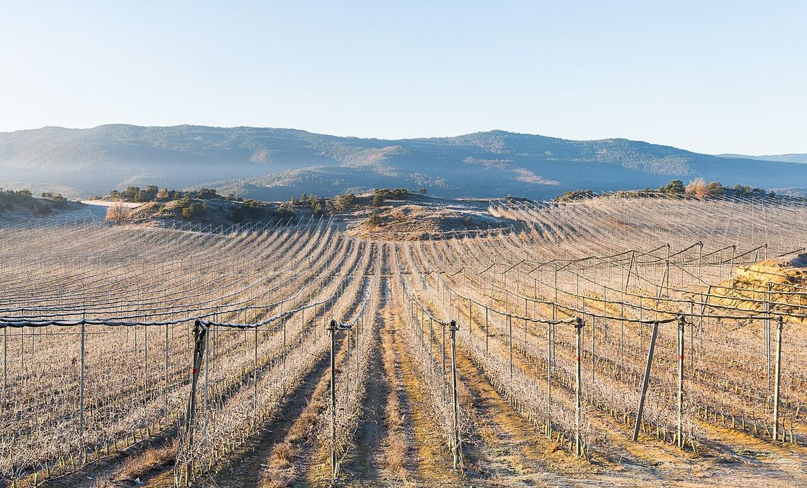

Spain
Spain is one of the world's great wine countries, with one of the largest vineyard areas on the planet and a remarkable diversity of climates, soils and grape varieties. Its output ranges from the Atlantic whites of Galicia to the reds of Rioja and Ribera del Duero, the sparkling wines of Cava and the fortified wines of Jerez.

History
Viticulture on the Iberian Peninsula is very old. The Phoenicians founded Gadir, today's Cádiz, towards the end of the second millennium BC and helped spread vine growing in the south; Greeks and Carthaginians also left their mark on the Mediterranean coast. Under Rome, Hispania became a wine exporter, as shown by the amphorae from Baetica and Tarraconensis found throughout the Empire. During the Al-Andalus period the vineyards survived, partly for table grapes and raisins, and after the Reconquista monasteries played a key role in preserving and expanding cultivation, especially in the north.
From the late Middle Ages onwards, the wines of Jerez, Málaga and the Canary Islands became famous in England and northern Europe, and trade with the Americas opened up new markets. In the second half of the nineteenth century, the arrival of phylloxera in France sent French merchants looking for wine in Spain, above all in Rioja, which encouraged ageing in Bordeaux-style barrels. The pest was detected in Málaga in 1878 and then spread across almost the whole country, forcing growers to replant on American rootstocks. The Wine Statute of 1932 laid the legal foundations for designations of origin, and Spain's entry into the European Economic Community in 1986 accelerated the modernisation of wineries and vineyards.
Climate and soils
Spain has one of the largest vineyard areas in the world and a remarkable diversity of growing conditions. Atlantic Spain in the north-west, including Galicia and the Cantabrian coast, is damp and mild and produces mainly fresh white wines. The central Meseta, often lying above 600 or 700 metres, has a continental climate with cold winters, hot summers and wide differences between day and night temperatures. The Mediterranean coast and the Ebro valley are warmer and drier, while the Andalusian south combines intense heat with the influence of sea winds. The volcanic Canary Islands are a case apart.
Soils are just as varied: calcareous clays in Rioja and much of the Duero valley, the white albariza of Jerez, the slates of Priorat (known as llicorella), Bierzo and Ribeira Sacra, the granite of Rías Baixas, the rounded pebbles and sands of Rueda and Toro, and the volcanic ash of Lanzarote.
Grapes and styles
Although there are hundreds of native varieties, a small group accounts for most of the vineyard area. Tempranillo, also known as Tinta del País, Tinto Fino, Tinta de Toro or Cencibel, is the most widely planted red grape. Grenache dominates in Aragón, Navarra and much of Catalonia; Monastrell in the south-east; Bobal in Utiel-Requena; and Mencía in the north-west. Among the whites, the most important are Airén, grown mainly in La Mancha, Galician Albariño, Verdejo from Rueda, the trio of Macabeo, Xarel·lo and Parellada used for Cava, and Palomino and Pedro Ximénez, the basis of the wines of Jerez, Montilla-Moriles and Málaga. International varieties such as Cabernet Sauvignon, Merlot, Syrah and Chardonnay are permitted in many areas.
The range of styles is wide: young reds and long-aged reds, very fresh Atlantic whites, rosés and the light reds known as claretes, traditional-method sparkling wines such as Cava, fortified wines aged biologically or oxidatively, and sweet wines made either naturally or from sun-dried grapes.
Regulations and classifications
The 2003 Vineyard and Wine Act (Ley 24/2003) sets out the current classification. At the base are wines without a geographical indication. Vinos de la Tierra correspond to the European protected geographical indication (PGI). Within the protected designation of origin (PDO) there are several levels: Quality Wines with a Geographical Indication, Designations of Origin (DO), Qualified Designations of Origin (DOCa), of which there are only two, Rioja and Priorat, and Vinos de Pago, which cover individual estates with distinctive characteristics. Each designation has a regulatory council that controls permitted varieties, yields and winemaking practices.
The law also defines the ageing terms. For reds, Crianza requires a minimum of 24 months of ageing, at least six of them in oak barrels; Reserva 36 months, with at least twelve in barrel; and Gran Reserva 60 months, with a minimum of eighteen in barrel. For whites and rosés the minimums are 18 months for Crianza, 24 for Reserva and 48 for Gran Reserva, with at least six months in barrel in each case. Many designations, such as Rioja and Ribera del Duero, impose stricter requirements. There are also the terms Noble, Añejo and Viejo for wines with extended ageing.
In recent years several designations have introduced origin-based classifications, with mentions for villages, named sites or single vineyards, which complement the traditional system based on length of ageing.
Regions & appellations
Rioja
Qualified Designation of Origin (DOCa) · Rioja, in the Ebro valley, became Spain's first Qualified Designation of Origin in 1991. It is best known for its Tempranillo-based reds and its long tradition of ageing in oak barrels.
Ribera del Duero
Designation of Origin (DO) · Ribera del Duero is a designation of origin in Castilla y León, created in 1982, that runs along the Duero river on a high plateau. It is known for its reds made from Tempranillo, called Tinto Fino or Tinta del País locally.
Rueda
Designation of Origin (DO) · Rueda, created in 1980, was the first designation of origin in Castilla y León. It is the leading reference for the Verdejo grape and for the white wines of the northern Meseta.
Toro
Designation of Origin (DO) · Toro is a designation of origin in Zamora and Valladolid, on the banks of the Duero, recognised in 1987. Its reds from Tinta de Toro, the local form of Tempranillo, are noted for their deep colour, structure and ripeness.
Cigales
Designation of Origin (DO) · Cigales is a designation of origin north of Valladolid, in the Pisuerga valley, recognised in 1991. Traditionally associated with rosés and claretes, it also produces Tempranillo reds.
Bierzo
Designation of Origin (DO) · Bierzo is a designation of origin in the north-west of the province of León, recognised in 1989. It is the home of Mencía reds and Godello whites, often from old hillside vineyards.
Arribes
Designation of Origin (DO) · Arribes is a designation of origin recognised in 2007 in the Duero canyon, on the border between Spain and Portugal, in the provinces of Zamora and Salamanca. It is notable for the native Juan García grape and its terraced vineyards.
Rías Baixas
Designation of Origin (DO) · Rías Baixas, in south-western Galicia, is a designation of origin recognised in 1988 and devoted mainly to Albariño whites. Its Atlantic climate and granite soils produce fresh, aromatic wines.
Ribeira Sacra
Designation of Origin (DO) · Ribeira Sacra, in inland Galicia, is a designation of origin recognised in 1996, famous for its terraced vineyards above the canyons of the Miño and Sil. Its main variety is Mencía.
Valdeorras
Designation of Origin (DO) · Valdeorras, in the Sil valley in the east of the province of Ourense, is one of the oldest designations of origin in Galicia. It is the leading reference for the Godello grape, which was revived here from the 1970s onwards.
Ribeiro
Designation of Origin (DO) · Ribeiro, in the province of Ourense, is one of the oldest designations of origin in Galicia and in Spain. Its wines, mainly Treixadura whites, were already exported in the Middle Ages, and it preserves the traditional sweet wine known as Tostado.
Monterrei
Designation of Origin (DO) · Monterrei is the southernmost designation of origin in Galicia and the one with the most continental climate, located in the Támega valley around Verín, next to the Portuguese border. It produces mainly Godello and Treixadura whites and Mencía reds.
Getariako Txakolina
Designation of Origin (DO) · Getariako Txakolina is the designation of origin for the txakoli of Gipuzkoa, on the Basque coast, and was the first devoted to this wine. It mainly produces light, fresh whites with a slight spritz from the Hondarrabi Zuri grape.
Navarra
Designation of Origin (DO) · Navarra is one of Spain's oldest designations of origin, with five subzones ranging from the pre-Pyrenean valleys to the Ebro plain. It was traditionally famous for its Grenache rosés and now produces a wide range of reds, whites and sweet Moscatel wines.
Somontano
Designation of Origin (DO) · Somontano is a designation of origin in the province of Huesca, at the foot of the Pyrenees, centred on Barbastro. It combines native varieties such as Moristel and Parraleta with a wide range of international grapes.
Campo de Borja
Designation of Origin (DO) · Campo de Borja is a designation of origin in the province of Zaragoza, between the Ebro valley and the slopes of the Moncayo. It specialises in Grenache, with many old vineyards, and promotes itself as the Empire of Grenache.
Calatayud
Designation of Origin (DO) · Calatayud is a designation of origin in the south-west of the province of Zaragoza, in the Iberian System, with some of the highest vineyards in Aragón. It is known for old-vine Grenache grown on poor slate and limestone soils.
Cariñena
Designation of Origin (DO) · Cariñena, south of Zaragoza, is one of Spain's oldest designations of origin and gives its name to the Cariñena grape, known in France as Carignan. Today its main variety is Grenache.
Priorat
Qualified Designation of Origin (DOCa) · Priorat, in the province of Tarragona, is one of Spain's two Qualified Designations of Origin, alongside Rioja. Its reds from Grenache and Carignan, grown on slopes of slate known as llicorella, are noted for their concentration and mineral character.
Montsant
Designation of Origin (DO) · Montsant is a designation of origin in the province of Tarragona created in 2001, which almost completely surrounds Priorat. It mainly produces Grenache and Carignan reds on soils more varied than those of its neighbour.
Penedès
Designation of Origin (DO) · Penedès is a designation of origin in Catalonia, between Barcelona and Tarragona, known for its whites from Xarel·lo, Macabeo and Parellada and for a wide range of reds, rosés and sparkling wines. Its territory largely overlaps with the heartland of Cava production.
Cava
Designation of Origin (DO) · Cava is the designation of origin for Spanish sparkling wines made by the traditional method, with a second fermentation in bottle. Although production is concentrated in Penedès, around Sant Sadurní d'Anoia, its production area covers municipalities in several autonomous communities.
Terra Alta
Designation of Origin (DO) · Terra Alta is a designation of origin in the far west of the province of Tarragona, around Gandesa. It is particularly known for its White Grenache whites, although it also makes Grenache and Carignan reds and traditional rancio and sweet wines.
Empordà
Designation of Origin (DO) · Empordà is the designation of origin of north-eastern Catalonia, in the province of Girona, between the Pyrenees and the Mediterranean. Shaped by the tramontana wind, it produces Carignan and Grenache reds, whites and the traditional sweet wine Garnatxa de l'Empordà.
Costers del Segre
Designation of Origin (DO) · Costers del Segre is a designation of origin in inland Catalonia, mainly in the province of Lleida, made up of several scattered subzones along the Segre river and its tributaries. Its dry continental climate gives rise to a wide variety of reds, whites and rosés.
Jerez-Xérès-Sherry
Designation of Origin (DO) · Jerez-Xérès-Sherry, in the province of Cádiz, is the designation of origin for sherry, made mainly from Palomino and aged in the criaderas and solera system. Its range runs from biologically aged finos to olorosos and sweet Pedro Ximénez.
Montilla-Moriles
Designation of Origin (DO) · Montilla-Moriles is a designation of origin in the south of the province of Córdoba, devoted mainly to fortified-style wines made from Pedro Ximénez. Its finos often reach their strength naturally, without fortification, and its sweet Pedro Ximénez wines come from sun-dried grapes.
Málaga
Designation of Origin (DO) · Málaga is a historic designation of origin devoted mainly to sweet wines from Moscatel and Pedro Ximénez, ranging from naturally sweet wines to long-aged liqueur wines. It shares a regulatory council with the Sierras de Málaga DO, which covers dry still wines.
Jumilla
Designation of Origin (DO) · Jumilla is a designation of origin in south-eastern Spain, between the north of the Region of Murcia and the south-east of Albacete. Its emblematic variety is Monastrell, grown in a dry continental climate and partly on its own roots.
Alicante
Designation of Origin (DO) · Alicante is a designation of origin in the Valencian Community divided into two subzones, Vinalopó and La Marina. It is known for its Monastrell reds, the Moscatels of the Marina Alta and Fondillón, a historic long-aged wine.
Utiel-Requena
Designation of Origin (DO) · Utiel-Requena is a designation of origin in the interior of the province of Valencia, located on a high plateau with a continental climate. It is the heartland of the Bobal grape, used to make reds and rosés.
La Mancha
Designation of Origin (DO) · La Mancha, in Castilla-La Mancha, is Spain's largest designation of origin by area and one of the largest wine regions in the world. Traditionally dominated by the white Airén, it now also produces a growing share of reds from Tempranillo and international varieties.
Valdepeñas
Designation of Origin (DO) · Valdepeñas is a designation of origin in the south of the province of Ciudad Real, surrounded by the La Mancha DO. Historically a supplier of wine to Madrid, it is known for its reds from Tempranillo, called Cencibel here, and its tradition of making wine in tinajas.
Lanzarote
Designation of Origin (DO) · Lanzarote is the designation of origin of the Canary island of the same name, where vines are grown in pits dug into volcanic ash and protected by stone walls. Its emblematic variety is Malvasía Volcánica.